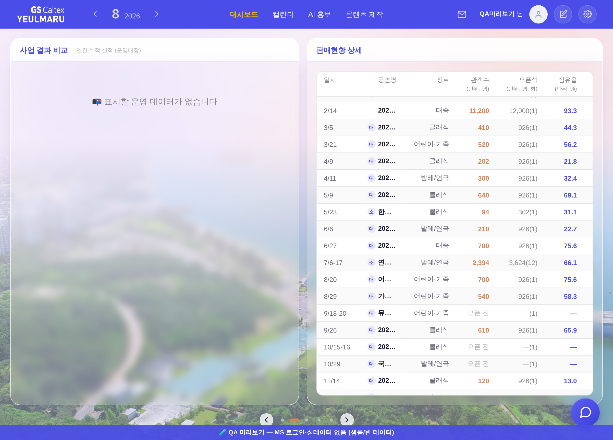
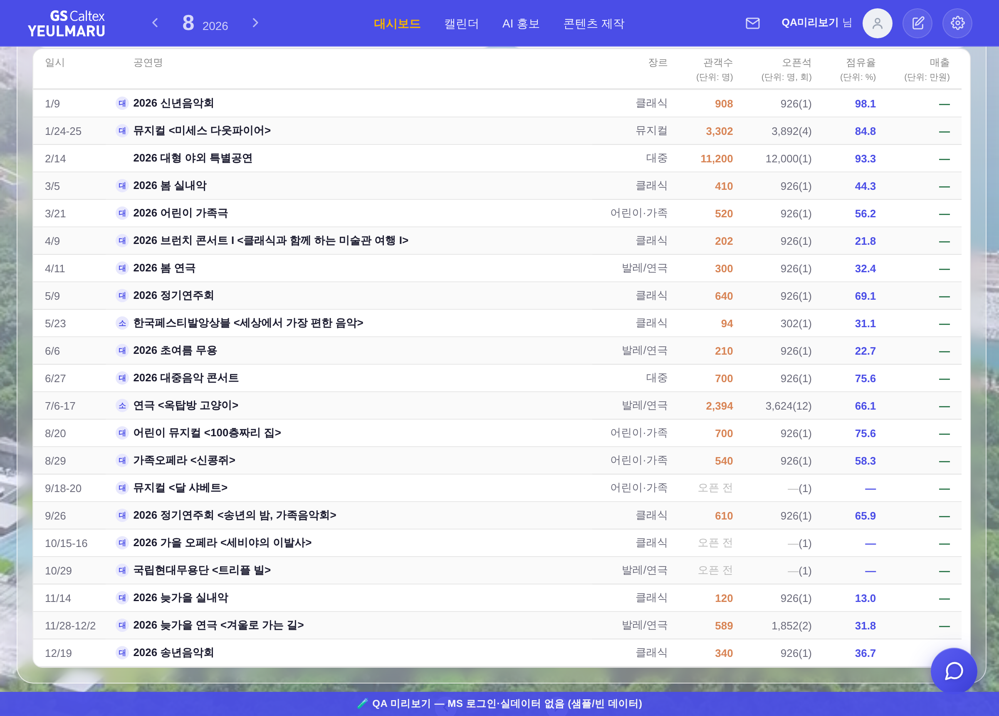
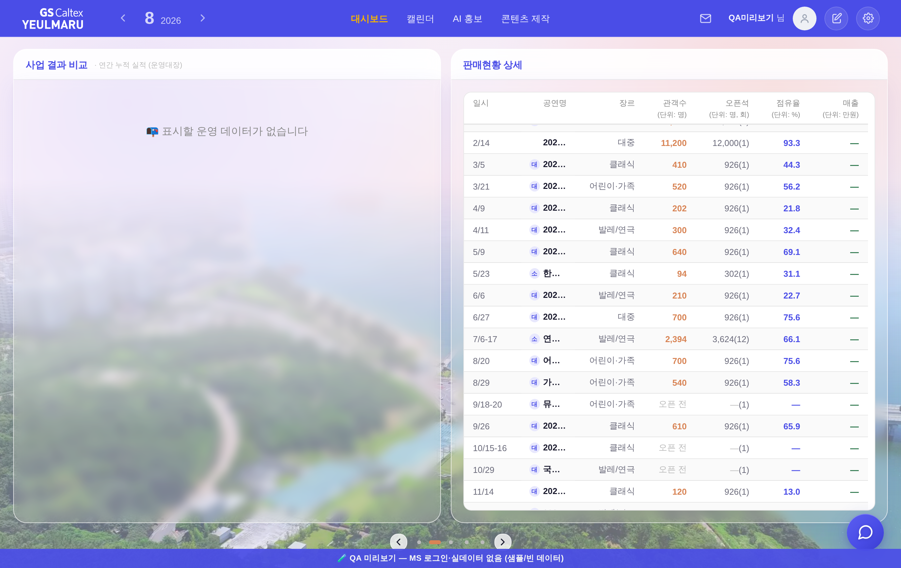
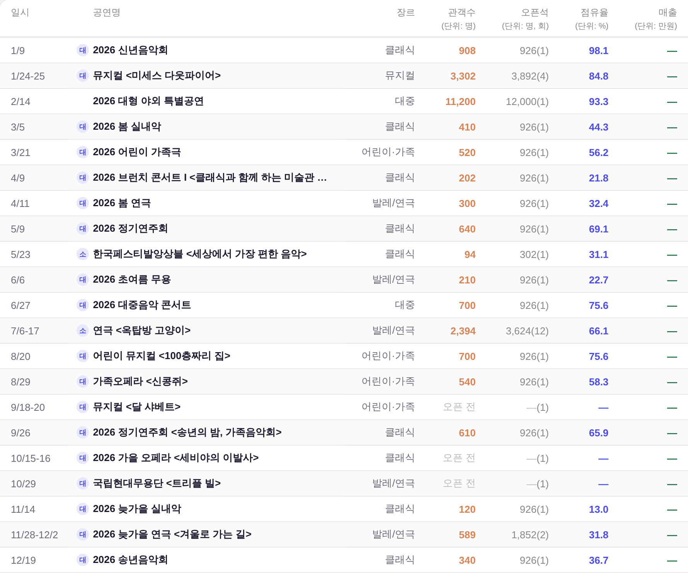
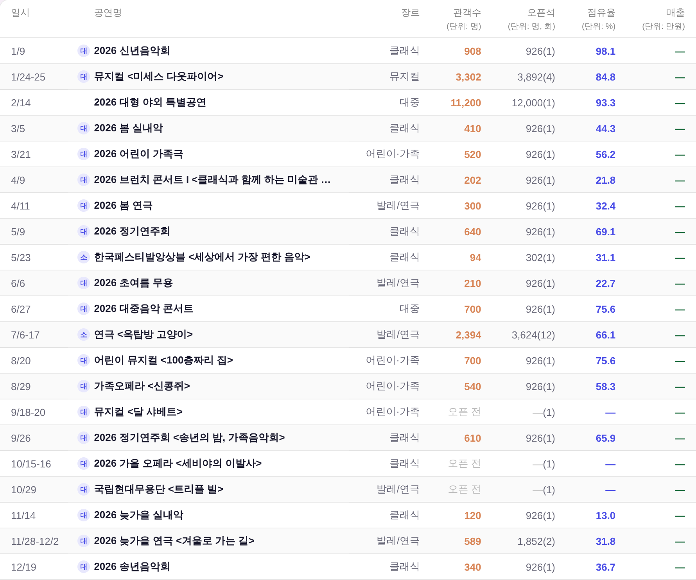

운영자 260807-10 「응 다 배선 ㄱㄱ」 — 결정 2건을 실제 코드에 반영했다. 전부 실화면(?qa=admin 목데이터) 실측 · 실API·PII 미접촉.
_colGap 12→22 · 5열)로 표가 42px 넓어지기 전 수치다. 승인된 건 숫자가 아니라 「잘림이 없어질 때까지」였으므로 다시 쟀다 — 무패치 폭 스윕 실측:
1201 넘침 82px · 1280 43 · 1340 13 · 1360 3 · 1364 1 · 1365 = 0(매출 열 복귀). → 하한 = 1365._BIZ_WIDE_MIN 한 곳으로 모으고, 폭 비교는 전부 _bizBookWide()만 부르게 했다(서로 참조값 · 게이트가 CSS 짝까지 대조).

여기서 잘렸다 — 매출 열은 카드 밖
매출 열이 보인다 1열 = 화면 전폭을 표가 다 쓴다
관객수·오픈석·점유율·매출 — 잘린 열 0| 폭 | 전 모드 | 후 모드 | 전 넘침 | 후 넘침 | 전 공연명 칸 | 후 공연명 칸 | 매출 열 |
|---|---|---|---|---|---|---|---|
| 1200 | 1열 | 1열 | 0 | 0 | 578.5px | 578.5px | 변화 없음 |
| 1201 | 2열 | 1열 | 82px | 0 | 81px | 584.5px | 안 보임 |
| 1280 | 2열 | 1열 | 43px | 0 | 81px | 663.5px | 안 보임 |
| 1364 | 2열 | 1열 | 1px | 0 | 81px | 747.5px | 안 보임(1px) |
| 1365 | 2열 | 2열 | 0 | 0 | 81px | 81px | 보임 — 여기가 하한 |
| 1440 / 1920 | 2열 | 2열 | 0 | 0 | 118.5 / 358.5px | 118.5 / 358.5px | 변화 없음 |
tools/check_wide_threshold.py(하드 0 · pre-commit): ①상수 1곳 ②_bizBookWide()가 그 상수를 그대로 쓰는가 ③CSS 짝이 max-width:(N−1)px인가 ④innerWidth를 숫자와 직접 비교하는 자리 0. 킬테스트 5/5 차단. 레이아웃 스모크도 1280·1366·1440·1600·1920 전건 PASS(이젤·흰 라인 Δ0).--dim → --neutral-text (AA 통과)--dim · 3.54:1 (AA 미달)
--neutral-text · 5.23:1 (AA 통과)
| 안 | 잉크 | 흰 행 대비 | 줄무늬 행 | AA 4.5:1 | 적용 범위 |
|---|---|---|---|---|---|
| 전 | var(--dim) | 3.54:1 | 3.40:1 | 미달 | — |
| 후 | var(--neutral-text) | 5.23:1 | 5.01:1 | 통과 | 3면 우 열 + 「사업 결과 비교」 모달 동시(정본 _bizListTable 한 벌) |
_bizListBuild/_bizListTable 한 벌로 합쳐 둔 덕에, 잉크 한 글자를 고치니 3면 우 열과 모달이 동시에 따라왔다(check_biz_list가 그 구조를 지킨다).--dim 3.40:1로 AA 미달이다(표 전체 회색 축 = 기틀 §6 부채). 본문만 올린 지금이 위계상으로는 정상이고, 머리글 축은 별건으로 남긴다.